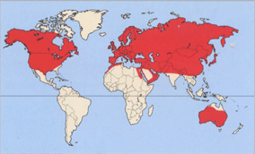

Спочатку руді лисиці жили в Північній Америці, Європі та Азії. У середині XIX століття були завезені в Австралію. Поблизу людських поселень територія однієї лисиці становить 10 га, а вдалині від них - до 2 000 га.

Ареал рудої лисиці
Багато лисиць обожнюють грати з м’ячем. З яким саме – їм неважливо, лише б він був круглим і добре катався.
Лисиця може вимовляти близько сорока різних звуків.
Лисиця може почути і відчути мишу під шаром снігу товщиною в метр.
Лисиця здатна бігти швидким кроком всю ніч безперервно, не зупиняючись.
Лисиця здатна бігти швидким кроком всю ніч безперервно, не зупиняючись.
Арктична лисиця здатна витримувати температуру до -70 градусів. Крім того, на зиму вона обзаводиться білою шерстю, щоб зливатися зі снігом.